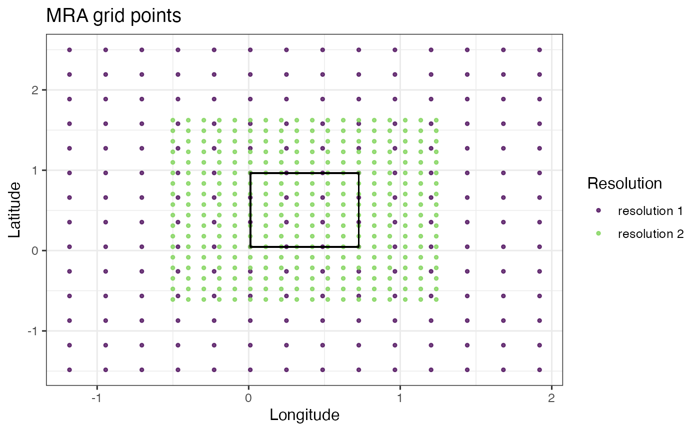

R/mra-wendland-2d-pred.R
mra_wendland_2d_pred.RdCode to construct the mutli-resolution sparse basis function representation for fitting spatial processes
mra_wendland_2d_pred(locs_pred, MRA, max_points = NULL, use_spam = TRUE)
| locs_pred | The location variables in 2 dimensions over which to construct the basis function representation in the prediction stage. |
|---|---|
| MRA | The multi-resolution basis expansion at the observed locations. This object is the output of |
| max_points | The expected number of pairs less than or equal to the radius. Default is |
| use_spam | is a boolean flag to determine whether the output is a list of spam matrix objects ( |
A list of objects including the observation locations locs,
the MRA knots locations locs_grid,
the Wendland basis representation matrix W_pred at the prediction locations,
the basis radius radius,
the numbers of resolutions M,
the basis function dimensions n_dims,
the basis function resolution indices dims_idx,
the number of expected neighbors in the interior of each grid n_neighbors,
the number of interior basis functions in one direction n_coarse_grid,
the number of additional padding basis functions given by n_padding,
and the setting use_spam which determines whether the MRA output uses the spam format.
set.seed(111) locs <- matrix(runif(20), 10, 2) locs_pred <- matrix(runif(20), 10, 2) MRA <- mra_wendland_2d(locs, M = 2, n_coarse_grid = 4) MRA_pred <- mra_wendland_2d_pred(locs_pred, MRA) ## plot the MRA prediction grid at different resolutions plot_MRA_grid(MRA_pred)